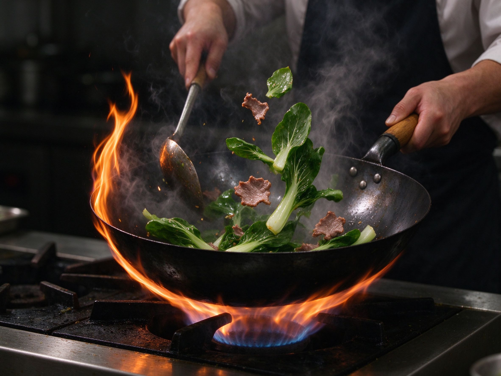

How to Get Wok Hei: The Smoky Breath of a Restaurant Stir-Fry, at Home
You've made the same fried rice or chow mein recipe at home, and it's good — but it's not that. The missing ingredient is wok hei ("wok breath"): the smoky, slightly charred, almost impossible-to-name savor that only comes from a screaming-hot wok. It's not magic, and you don't need a restaurant burner to get it. Here's how.
What Wok Hei Actually Is
Wok hei is the flavor created when food, oil, and a little moisture hit an extremely hot carbon-steel wok and the heat caramelizes sugars and chars the edges while smoke infuses the food. The result is a pleasant smokiness with a faint bitterness that reads as "deep" and "toasty." Cantonese cooks treat it as the soul of stir-fry — see our char siu and noodle guides for where it matters most.
The Four Levers You Actually Control
1. Carbon steel, not non-stick
A carbon-steel wok is thin, heats fast, and — crucially — holds enough heat for the sear that creates wok hei. Non-stick woks cap out at too-low a temperature and block the browning you're after. Season your carbon-steel wok first (a 20-minute job), and it becomes as non-stick as anything in your kitchen.
2. Heat it until it smokes — then back off
Set the burner to high and let the empty wok heat until a drop of water sizzles and evaporates instantly — near smoking point. Add cold oil right before the food, which momentarily cools the surface and prevents sticking while keeping the pan fiercely hot. This "hot wok, cold oil" step is the classic trick.
3. Small batches, high surface contact
Overcrowding drops the temperature instantly and steams instead of sears. Cook in small batches so each piece stays in contact with hot metal. If your stove is modest, cook in even smaller batches than you think — quality of contact beats quantity.
4. Let moisture become smoke
The fine spray of water or Shaoxing wine cooks add (a few drops down the side of the hot wok) creates a burst of steam that lifts flavor and delivers the signature smoke-and-sizzle. Add it in quick bursts, toss fast, and keep moving.
A Home-Cook Sequence That Works
- Seasoned carbon-steel wok, dry.
- Heat on highest setting until it just starts to smoke; swirl in cold oil.
- Add aromatics (garlic, ginger, scallions) and toss a few seconds until fragrant.
- Add protein in one layer, let it sear without moving for 30-45 seconds, then toss.
- Add vegetables in order of density — firmest first.
- Splash a few drops of wine or water down the side, toss, season with soy sauce or oyster sauce, and serve immediately.
Common Mistakes to Skip
- Low heat "to be safe" — this steams everything; the wok must be genuinely hot.
- Overcrowding — the single fastest way to kill wok hei.
- Stirring constantly — let the protein sit and brown before you toss it.
- Wet ingredients dumped in — drain marinades and add sauce at the end, or you boil instead of sear.
Once the wok hei habit clicks, every stir-fry on this site — from tomato egg to kung pao — jumps a level. It's the single most transferable skill in Chinese home cooking, and it's yours with one pan and a little patience.